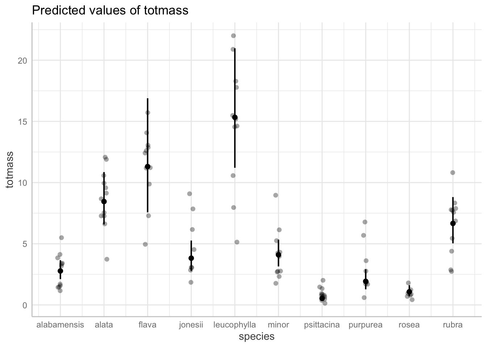
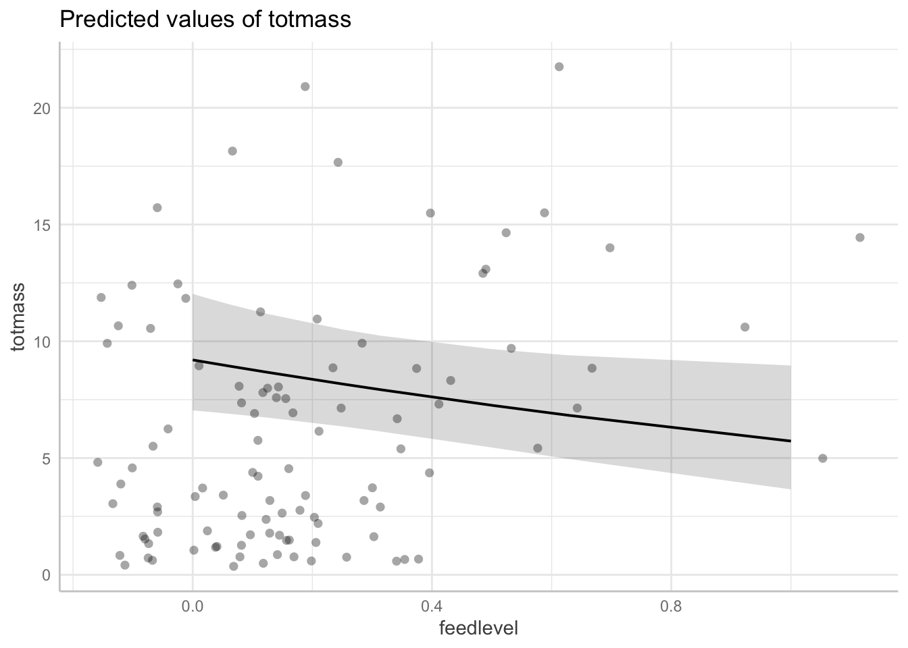

Code
library(tidyverse)
library(here)
library(janitor)
library(ggeffects)
library(performance)
library(naniar)
library(flextable)
library(car)
library(broom)
library(corrplot)
library(AICcmodavg)
library(GGally)library(tidyverse)
library(here)
library(janitor)
library(ggeffects)
library(performance)
library(naniar)
library(flextable)
library(car)
library(broom)
library(corrplot)
library(AICcmodavg)
library(GGally)Read in the data:
plant <- read_csv(here("data", "knb-lter-hfr.109.18", "hf109-01-sarracenia.csv")) %>%
# make the column names cleaner
clean_names() %>%
# selecting the columns of interest (only retain these columns)
select(totmass, species, feedlevel, sla, chlorophyll, amass, num_lvs, num_phylls)Visualize the missing data:
gg_miss_var(plant)
Subsetting the data by dropping NAs:
plant_subset <- plant %>%
# drops rows with NA values in the columns you specify
# it's ok to remove NA's here because we don't know where NA's come from
drop_na(sla, chlorophyll, amass, num_lvs, num_phylls) Create a correlation plot:
Example writing: To determine the relationships between numerical variables in our dataset, we calculated Pearsons r and visually represented correlation using a correlation plot.
# calculate Pearson's R for numerical values only
plant_cor <- plant_subset %>%
# not including totmass because it's the y variable
select(feedlevel:num_phylls) %>%
# make correlation matrix (plots variables against each other)
# perfect correlation = 1
cor(method = "pearson")
# creating a correlation plot (visualizes the correlation matrix we made with cor() function)
corrplot(plant_cor,
# change shape of what's in the cells (ellipse pointing to right = positive relationship)
method = "ellipse",
addCoef.col = "black")
Create a plot of each variable compared against the others
plant_subset %>%
# can include the species column now because pairs plots can include categorical variables too
select(species:num_phylls) %>%
ggpairs()
Starting regression here:
(example) To determine how species and physiological characteristics predict biomass, we fit multiple linear models
# create a null model
# totmass ~ 1 means there is no predictor
null <- lm(totmass ~ 1, data = plant_subset)
# full model has all variables in it
full <- lm(totmass ~ species + feedlevel + sla + chlorophyll + amass + num_lvs + num_phylls,
data = plant_subset)We visually assessed normality and homoscedasticity of residuals using diagnostic plots for the full model:
# set up a 2x2 grid to display diagnostic plots
par(mfrow = c(2,2))
plot(full)
# residuals look pretty normal because they are mostly along the QQ plot line
# looks heteroskedastic because even though line is pretty flat, residuals have a cone shapeWe also tested for normality using the Shapiro-Wilk test (null hypothesis: variable of interest (i.e. the residuals) are normally distributed).
We tested for heteroskedasticity using the Breusch-Pagan test (null hypothesis: variable of interest has constant variance).
check_normality(full)Warning: Non-normality of residuals detected (p < .001).# results: Non-normality of residuals detected (p < .001)
# this is very common for large datasets
check_heteroscedasticity(full)Warning: Heteroscedasticity (non-constant error variance) detected (p < .001).# results: Heteroscedasticity (non-constant error variance) detected (p < .001).
# results: assumptions for multiple linear regression are not met# make null model with no predictors (only response and intercept)
null_log <- lm(log(totmass) ~ 1, data = plant_subset)
# transform variables
# log function in R is natural log ln
full_log <- lm(log(totmass) ~ species + feedlevel + sla + chlorophyll + amass + num_lvs + num_phylls, data = plant_subset)
plot(full_log)


check_normality(full_log)OK: residuals appear as normally distributed (p = 0.107).check_heteroscedasticity(full_log)OK: Error variance appears to be homoscedastic (p = 0.071).# results: residuals looks normal and homoscedastic now!Evaluate multicollinearity:
# calculate vif
# gvif means general vif and it is calculated if you have categorical variables
# third row is transformed gvif
# nothing above 5 in third row so model does display any aspects of multicollinearity?
car::vif(full_log) GVIF Df GVIF^(1/(2*Df))
species 42.351675 9 1.231351
feedlevel 1.621993 1 1.273575
sla 1.999989 1 1.414210
chlorophyll 1.949828 1 1.396362
amass 2.872084 1 1.694722
num_lvs 2.813855 1 1.677455
num_phylls 2.995510 1 1.730754We evaluated multicollinearity by calculating the generalized variance inflation factor and determined that the model does not display any aspects of multicollinearity.
Try some more models:
Addressing the question: what set of predictor variables best explains the response?
model2_log <- lm(log(totmass) ~ species, data = plant_subset)Check assumptions for model 2:
plot(model2_log) # looks pretty good


check_normality(model2_log) # looks goodOK: residuals appear as normally distributed (p = 0.374).check_heteroscedasticity(model2_log) # looks goodOK: Error variance appears to be homoscedastic (p = 0.100).compare models using Akaike’s Information criterion (AIC) values:
AICc(full_log) # this model is the least complex that best predicts your response because it has the lowest AIC value[1] 133.9424AICc(model2_log)[1] 157.5751AICc(null_log)[1] 306.0028# another way to check AIC but don't need to use this
MuMIn::AICc(full_log, model2_log, null_log) df AICc
full_log 17 133.9424
model2_log 11 157.5751
null_log 2 306.0028MuMIn::model.sel(full_log, model2_log, null_log)Model selection table
(Int) ams chl fdl num_lvs num_phy sla spc df
full_log -1.3390 0.002338 0.004368 -0.4743 0.09176 -0.03959 -0.002493 + 17
model2_log 0.8836 + 11
null_log 1.3500 2
logLik AICc delta weight
full_log -46.371 133.9 0.00 1
model2_log -66.337 157.6 23.63 0
null_log -150.941 306.0 172.06 0
Models ranked by AICc(x) We compared models using AIC and chose the model with the lowest value, which was…
We found that the __ model including __ ___ ___ predictors best predicted _____ (model summary - df, f stat, alpha, R2, etc)
summary(full_log)
Call:
lm(formula = log(totmass) ~ species + feedlevel + sla + chlorophyll +
amass + num_lvs + num_phylls, data = plant_subset)
Residuals:
Min 1Q Median 3Q Max
-0.88872 -0.20811 0.02825 0.24218 0.78287
Coefficients:
Estimate Std. Error t value Pr(>|t|)
(Intercept) -1.339043 0.597727 -2.240 0.027624 *
speciesalata 1.113163 0.184021 6.049 3.56e-08 ***
speciesflava 1.404562 0.262955 5.341 7.29e-07 ***
speciesjonesii 0.319652 0.196426 1.627 0.107281
speciesleucophylla 1.709035 0.227608 7.509 4.88e-11 ***
speciesminor 0.389310 0.187903 2.072 0.041239 *
speciespsittacina -1.645198 0.207035 -7.946 6.36e-12 ***
speciespurpurea -0.364348 0.254380 -1.432 0.155643
speciesrosea -0.947383 0.260495 -3.637 0.000467 ***
speciesrubra 0.875342 0.196361 4.458 2.46e-05 ***
feedlevel -0.474255 0.234493 -2.022 0.046199 *
sla -0.002493 0.001160 -2.149 0.034430 *
chlorophyll 0.004368 0.001189 3.672 0.000414 ***
amass 0.002338 0.002988 0.782 0.436166
num_lvs 0.091764 0.022413 4.094 9.46e-05 ***
num_phylls -0.039585 0.051714 -0.765 0.446068
---
Signif. codes: 0 '***' 0.001 '**' 0.01 '*' 0.05 '.' 0.1 ' ' 1
Residual standard error: 0.413 on 87 degrees of freedom
Multiple R-squared: 0.8687, Adjusted R-squared: 0.8461
F-statistic: 38.38 on 15 and 87 DF, p-value: < 2.2e-16table <- tidy(full_log, conf.int = TRUE) %>%
# change p-value numbers if they're really small using mutate
# change the estimates, standard error, t-stats to round to __ digits
# make it into flex table
flextable() %>%
# fit it to the viewer
autofit()
tableterm | estimate | std.error | statistic | p.value | conf.low | conf.high |
|---|---|---|---|---|---|---|
(Intercept) | -1.339043200 | 0.597726532 | -2.2402271 | 0.027624109607483092 | -2.527089405 | -0.1509969955 |
speciesalata | 1.113162580 | 0.184020930 | 6.0491086 | 0.000000035633453091 | 0.747401056 | 1.4789241035 |
speciesflava | 1.404562038 | 0.262954818 | 5.3414577 | 0.000000728606298866 | 0.881910865 | 1.9272132117 |
speciesjonesii | 0.319652351 | 0.196426010 | 1.6273423 | 0.107280978897063603 | -0.070765614 | 0.7100703152 |
speciesleucophylla | 1.709035391 | 0.227608275 | 7.5086698 | 0.000000000048774953 | 1.256639298 | 2.1614314841 |
speciesminor | 0.389310367 | 0.187903472 | 2.0718636 | 0.041239074384119417 | 0.015831871 | 0.7627888636 |
speciespsittacina | -1.645197874 | 0.207034720 | -7.9464830 | 0.000000000006356134 | -2.056701798 | -1.2336939506 |
speciespurpurea | -0.364347584 | 0.254380246 | -1.4322951 | 0.155642631385407848 | -0.869955868 | 0.1412607001 |
speciesrosea | -0.947383285 | 0.260494896 | -3.6368593 | 0.000466976667424191 | -1.465145097 | -0.4296214723 |
speciesrubra | 0.875341885 | 0.196361315 | 4.4578123 | 0.000024573993550446 | 0.485052508 | 1.2656312619 |
feedlevel | -0.474255269 | 0.234492879 | -2.0224719 | 0.046198841611705344 | -0.940335257 | -0.0081752817 |
sla | -0.002493083 | 0.001160230 | -2.1487826 | 0.034429589763780327 | -0.004799167 | -0.0001869994 |
chlorophyll | 0.004368330 | 0.001189484 | 3.6724575 | 0.000414110175835846 | 0.002004101 | 0.0067325586 |
amass | 0.002337656 | 0.002988210 | 0.7822929 | 0.436166480376765642 | -0.003601736 | 0.0082770479 |
num_lvs | 0.091763935 | 0.022413350 | 4.0941643 | 0.000094562482452723 | 0.047214976 | 0.1363128941 |
num_phylls | -0.039585071 | 0.051713890 | -0.7654630 | 0.446067519262092982 | -0.142372027 | 0.0632018848 |
use ‘ggpredict()’ to backtransform estimates
# How to interpret: all else held constant...alabamensis 2.75 biomass...
model_pred <- ggpredict(full_log, terms = "species", back.transform = TRUE)
# all dark lines are backtransformed
# plots predictions with each species
# bars are 95% confidence interval
# jittered points = original data
plot(model_pred, add.data = TRUE)
plot(ggpredict(full_log, terms = "chlorophyll", back.transform = TRUE), add.data = TRUE)
plot(ggpredict(full_log, terms = "feedlevel", back.transform = TRUE), add.data = TRUE)
model_pred# Predicted values of totmass
species | Predicted | 95% CI
---------------------------------------
alabamensis | 2.78 | [2.11, 3.65]
alata | 8.45 | [6.58, 10.86]
flava | 11.31 | [7.57, 16.89]
jonesii | 3.82 | [2.78, 5.26]
minor | 4.10 | [3.15, 5.33]
psittacina | 0.54 | [0.37, 0.77]
purpurea | 1.93 | [1.28, 2.91]
rubra | 6.66 | [5.03, 8.82]
Adjusted for:
* feedlevel = 0.18
* sla = 129.27
* chlorophyll = 471.29
* amass = 35.26
* num_lvs = 7.08
* num_phylls = 0.58type 1: order you put in variables in model matters in terms of how well they explain the variation in the response type 2: order doesn’t matter but interactions matter? type 3: order and interactions both matter